“Continual Learning is the constant development of increasingly
complex behaviors; the process of building more complicated skills on
top of those already developed.” --- Ring(1997).CHILD: A First
Step Towards Continual Learning
Continual Learning is also referred to as lifelong Learning,
sequential learing or incremental Learning. They have the same
define.
“Studies the problem of Learning froman infinite stream of data,
with the goal of gradually extending acquired knowledge and using it for
future Learning.” --- Z.Chen. Lifelong machine
Learning
Adaptive continuous Learning in a dynamic
environment to learn tasks sequentially.
In others words, Continual Learning tries to make machine like human
to adaptive continuou Learning in a dynamic environment to learn tasks
sequentially (from birth to death).
A low level definition.
Continual Learning(CL) is an algorithm whose goal is to make machine
Learning models train on non-stationary data (different from I.I.D.
data.) from sequential tasks.
Take an example2, we define a sequence of tasks \(D = \{D_1, \ldots, D_T\}\), where the
t-th task \(D_t=
\{(\mathbf{x}_i^t,y_i^t)\}_{i=1}^{n_t}\) contains tuples of the
input sample \(\mathbf{x}_i^t \in
\mathcal{X}\) , and it's label \(y_i^t
\in \mathcal{Y}\). The goal of the CL model is to train a single
model \(f_\theta : \mathcal{X} \rightarrow
\mathcal{Y}\) parameterized by \(\theta\), and it can predicts the label
\(y = f_\theta (\mathbf{x}) \in
\mathcal{Y}\), where \(\mathbf{x}\) is an unseen test sample from
arbitrary tsaks. And data from the previous tasks may not be seen
anymore when training future tasks.
Motivation & Application
scenarios
As we all know, Alpha-Go kills everyone in the Go world, however when
it face to Chess, it is powerless. Similarly, YOLO(A
modelyou only look once) can detect the dog
easily, but it can only detect the specific object. Therefore, people
look forward to a model that can resolve the aforementioned problems.
This calls for systems that adapt Continually and keep on Learning over
time.
And talk about the application scenarious, Continual Learning can be
used in many areas. Take some simple examples, a robot need to acquire
new skills in different environment to complish new tasks, a
self-driving car need to adapt to different environments (from a country
road to a highway to a city), and the conversational agents should adapt
to different users, situations, tasks.
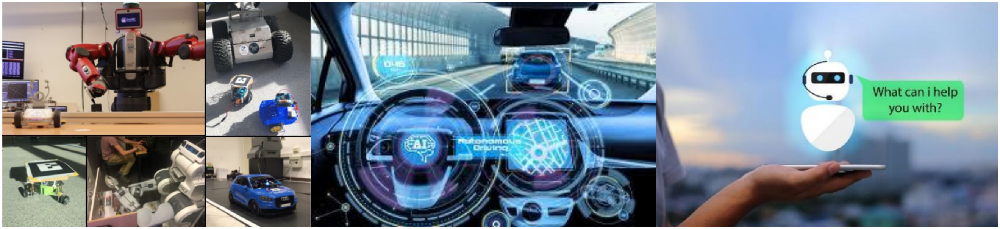
Application scenarios
The Challenge of Continual
Learing
Nowadays, methods of realizing Continual Learning almost use Neural
Networks(CNN, TransFormer and so on). And due to the limitations of the
Neural Networks, the Continual Learning faces two major challenges,
Catastrophic Forgetting and Balance between
Learning and Forgeting(Stability vs Plasticity).
Catastrophic Forgetting. When the data is
updated incrementally, the model will face catastrophic interference or
forgetting, which leads to the model forgetting how to solve the old
task after Learning the new task.
For example: A vision model, which can classify images into two
categories. First, we train the vision model by
Cat vs Dog Datasets, and then we get a perfect Acc(maybe
99.98%?) on current datasets. Second, we put the pre-trained model to
another datset(e.g. Car vs Ship Datasets) to train, and can
get a nice performance at the current datsets too. However, when we go
back to the Cat vs Dog Datasets, we will find that the
model forgets the previous data and can not divide them accurately. 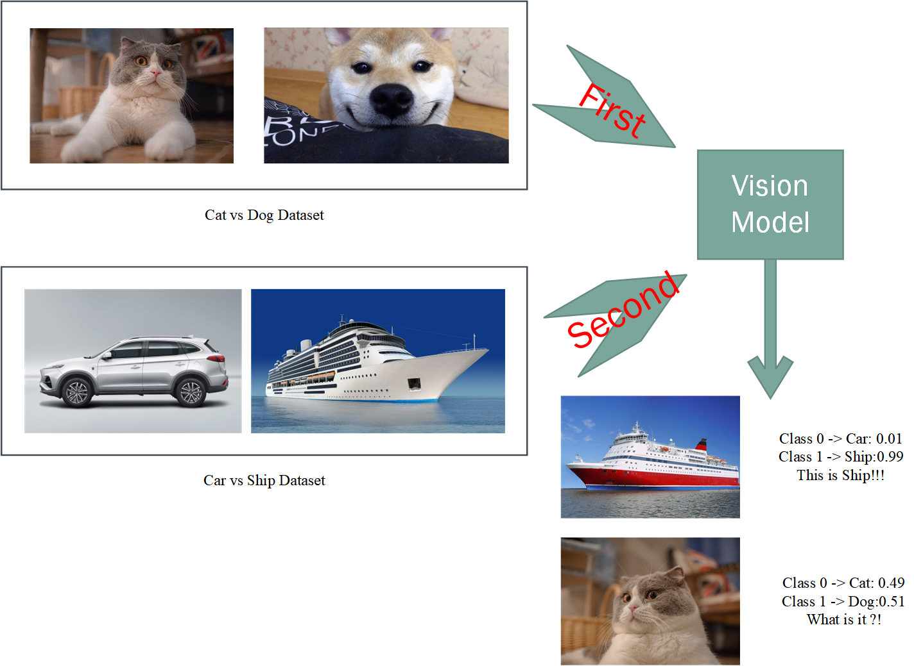
Stability vs Plasticity. For people, the faster
you learn, the faster you forget. The same is true for machines. How to
balance the relationship between them is also a challenge.
Stability <=> ability to retain the learned skills on the old
tasks
Plasticity <=> ability to adapt to a new task 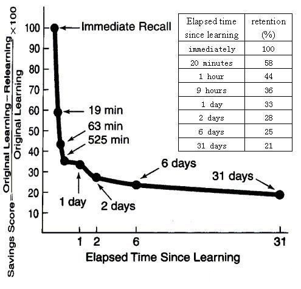
Albeit a challenging problem, progress in Continual Learning has led
to real-world applications starting to emerge.
Four Assumptions of
Continual Learning
Due to the general difficulty and variety of challenges in Continual
Learning, many methods relax the general setting to an easier task
incremental one.
Before understand the assumptions of the Continual Learing, we should
know some pre-settings. The same to A low level
definition
X - input vector
Y - class label
T - task.
The concept 'task' refers to an isolated training phase with
a new batch of data, belonging to a new group of classes, a new domain,
or a different output space.
\((\mathcal{X}^t,\mathcal{Y}^t)\) -
Dataset for task t.
\(\{\mathcal{Y}^t\}\) - Class
labels. e.g.:Dog Cat Bird ...
\(P(\mathcal{X}^t)\) - input
distributions. For different task, \(P(\mathcal{X}^t) \neq
P(\mathcal{X}^{t+1})\)
\(f_t(\mathcal{X^t};\theta)\) -The
predicted label of \(\mathcal{Y^t}\),model is parameterized by
\(\theta\)
The four assumptions of Continual Learning : 1. Task
incremental Learning. 2. Class incremental
Learning. 3. Domain incremental Learning. 4.
Data incremental Learning / Task-Agnostic Learning.
Task ID observed at training:
Task observed at test: Task incremental Learning
Task not observed at test : Class incremental Learning and Domain
incremental Learning
Task ID not observed at training:
Data incremental Learning / Task-Agnostic Learning
Detail description of four setting:
Task incremental
Learning(the easiest scenario)
Task incremental learning considers a sequence of tasks, receiving
trainig data of just one task at a time to perform traing until
convergence. During this setting, models are always informed about which
task needs to be performed (both at train and test time). However, data
is no longer available for old tasks, impeding evaluation of statistical
risk for the new parameter values.
Express it with formulas:
Data \((\mathcal{X}^t,\mathcal{Y}^t)\) is a
training-data of task t, the current task is \(\mathcal{T}\).
The goal is to control the statistical risk of all
seen tasks given limited or no access to data from previous tasks \(t < \mathcal{T}\). In others words, the
research focals on optimizing the below formula parameterized by \(\theta\): \[\sum\limits_{t=1}^{\mathcal{T}}\mathbb{E}_{(\mathcal{X}^t,\mathcal{Y}^t)}[\mathscr{L}(f_t(\mathcal{X^t};\theta),\mathcal{Y^t})],\]
For the current task \(\mathcal{T}\),
the statistical risk can be approximated by the
empirical risk: \[\frac{1}{N_\mathcal{T}}\sum\limits_{t=1}^{N_\mathcal{T}}\mathscr{L}(f_t(x_i^{\mathcal{T}};\theta),y_i^{\mathcal{T}})],
\] where \(N_{\mathcal{T}}\) is
the number data of task \(\mathcal{T}\).
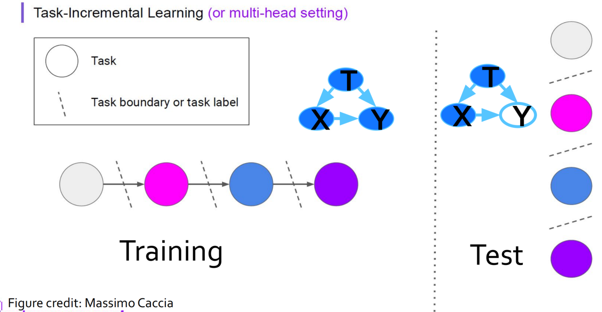
Task incremental Learning
All in all, this setting assumptions are: \(P(\mathcal{X}^t) \neq
P(\mathcal{X}^{t+1})\) and \({\{\mathcal{Y}\}^t\neq
\{\mathcal{Y}^{t+1}\}}\)(different labels when in different
task), \(P(\mathcal{Y}^t) \neq
P(\mathcal{Y}^{t+1})\), but you know which task it is when in
test.(each task has it's specific task-label t).
Class incremental Learning
'An algorithm learns continuously from a sequential data stream
in which new classes occur. At any time, the learner is able to perform
multi-class classification for all classes observed so far.3'
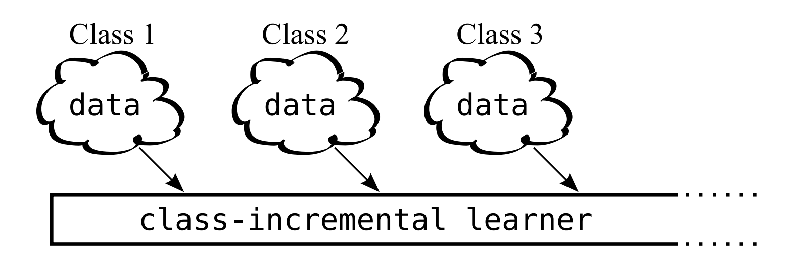
class-incremental Learning
Models must be able not only to solve each task seen so far, but also
to infer which task they are presented with.(You don't know which task
you are facing) The new class labels may be added into the model in new
task.
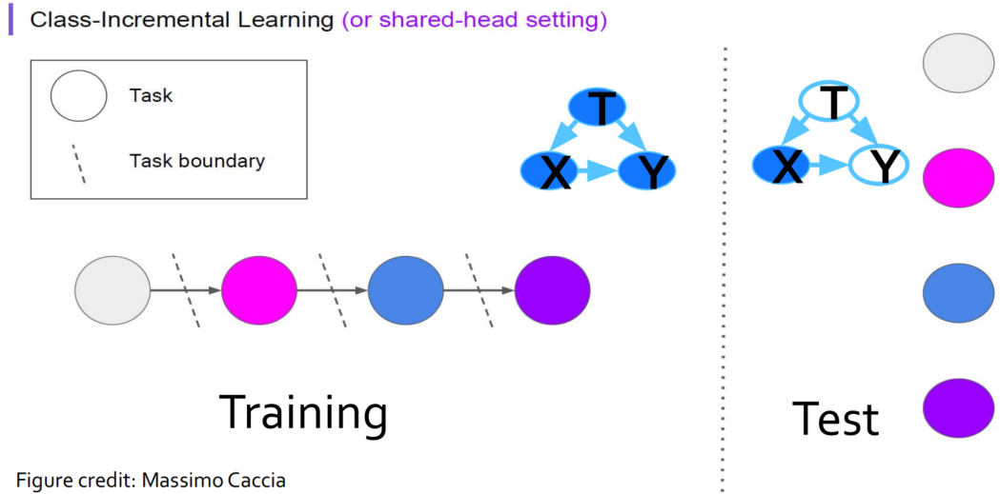
Class incremental Learning
The setting assumptions are: \(P(\mathcal{X}^t) \neq
P(\mathcal{X}^{t+1})\) and \({\{\mathcal{Y}\}^t\subset
\{\mathcal{Y}^{t+1}\}}\)(Class incremental), \(P(\mathcal{Y}^t) \neq
P(\mathcal{Y}^{t+1})\), and you don't know which task it is when
in test.
Domain incremental Learning
It defines a more general continual learning setting for any data
stream without notion of task, class or domain.
Models only need to solve the task at hand; they are not required to
infer which task it is. In other words, task concept is not specific
now, but it also have the task.
The setting assumptions are: \({\{\mathcal{Y}\}^t=
\{\mathcal{Y}^{t+1}\}}\), \(P(\mathcal{Y}^t) =
P(\mathcal{Y}^{t+1})\).
Data
incremental Learning / Task-Agnostic Learning (the hardest
scenario)
Task identity is not available even at training time! Task-Agnostic
Learning has no task concept at all, and it is the ideal condition of
Continual Learning. 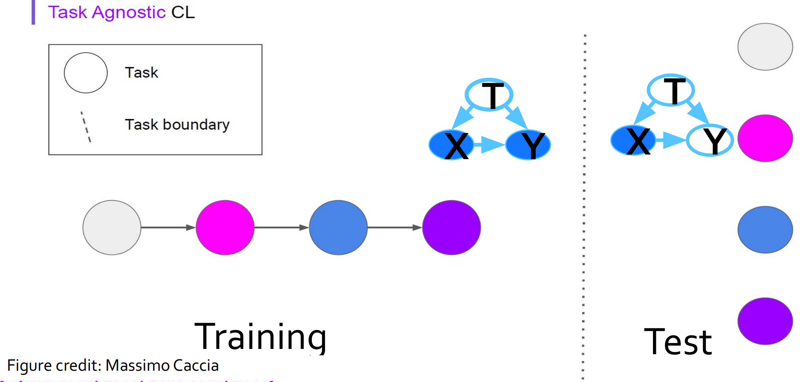
For a clearer understanding Task incremental
Learning,Class incremental Learning and
Domain incremental Learning, you can see the following
images4:
Split Mnist Task: Split the number into different task. 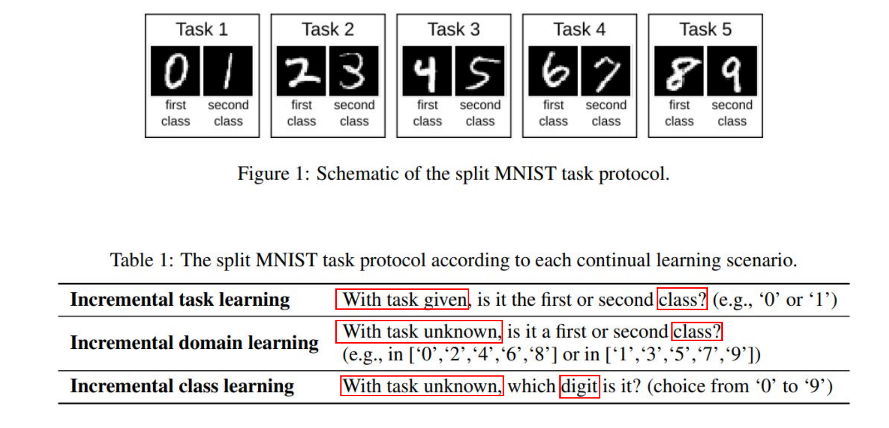
Permuted Mnist Task: Permute each image in MNIST after
vectorization. Actually use a group of random indexes to disrupt the
position of each element in the vector(image). Different random indexes
will generate different tasks after being disrupted.
The
difference between Continuous Learning and Multi-Task
However, the tasks are not available simultaneously in CL! Need to
use some form of memory, or to modify the gradients, to still take into
account what solutions are good for previous tasks
Some key definitions！
Transfer and Interference
Note: We need to maximize Transfer and minimize Interference. 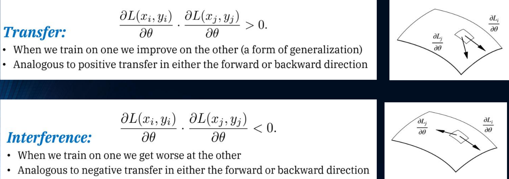
Possible Scenarios in CL
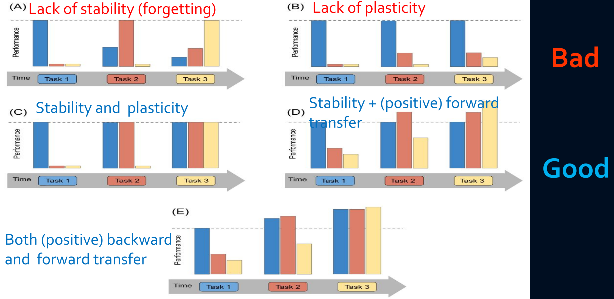
Possible Scenarios
The method of Continual
Learning
Refer to Lange, M. D., et al.5, I try to draw a mind
mapping for better understand the current mainstream methods of
Continual Learning.
The define of each method: ### Replay Methods As you see,
replay is the key. To realize replay,
this line of work should store samples in raw format or generate
pseudo-samples with a generative model (e.g. GAN/diffusion model)
because of privacy policy. Then, these previous task samples are
replayed while learning a new task to alleviate forgetting. According to
different ways of use, replay methods can be divided into the following
three categories:
Rehearsal (Easy to implement, but poor performence
)
It is the esaiest way to understand. Just combine a limited subset of
stored samples(old tasks) into new task, and retrain the model.
Advantage:
Easy to implement
Disadvantage:
Be prone to overfitting the subset of stored samples.
Be bounded by joint training.
Pseudo Rehearsal
Feed random input to previous models, use the output as a
pseudo-sample. (Generative models are also used nowadays but add
training complexity.)6
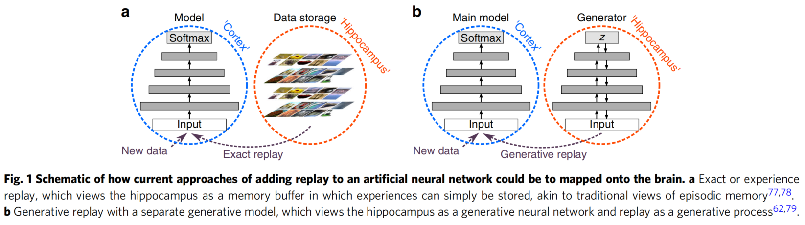
Pseudo Rehearsal
Novel GR method7: internal or hidden representations
are replayed that are generated by the network's own, context-modulated
feedback connections.
Constrained Optimization
Minimize interference with old tasks by constraining updates on the
new task. The goal is to optimize the loss on the current examples(s)
without increasing the losses on the previously learned examples.
Assume the examples are observed one at a time. Formulate the goal as
the following constrained optimization problem. \[\theta^{t}=\argmin_\theta \ell\left(f\left(x_{t}
; \theta\right), y_{t}\right)
\]\[s.t. \ell\left(f\left(x_{i} ;
\theta\right), y_{i}\right) \leq \ell\left(f\left(x_{i} ;
\theta^{t-1}\right), y_{i}\right) ; \forall i \in[0 \ldots
t-1]\]
\(f(. ; \theta)\) is a model
parameterized by \(\theta\), \(\ell\) is the loss function. \(t\) is the index of the current example and
\(i\) indexes the previous
examples.
The original constraints can be rephrased to the constraints in the
gradient space:
These method avoids storing raw inputs, prioritizing privacy, and
alleviating memory requirements. In these methods, an extra
regularization term is introduced in the loss function, to consolidate
previous knowledge when learning on new data. We can further divide
these methods into datafocused and prior-focused methods.
Data-Focused Methods
The basic building block in data-focused methods is knowledge
distillation from a previous model (trained on a previous task)
to the model being trained on the new data.
Prior-Focused Methods
To mitigate forgetting, prior-focused methods estimate a distribution
over the model parameters, used as prior when learning from new data.
Typically, importance of all neural network parameters is estimated,
with parameters assumed independent to ensure feasibility. During
training of later tasks, changes to important parameters are
penalized.
Parameter Isolation Methods
This family dedicates different model parameters to each task, to
prevent any possible forgetting. These mehods avoid forgetting by using
different parameters for each task.
Best-suited for: task-incremental setting, unconstrained model
capacity, performance is the priority.
Fixed Network Methods Network parts used for
previous tasks are masked out when learning new tasks (e.g., at neuronal
level (HAT) or at parameter level (PackNet, PathNet)
Dynamic Architecture Methods
When model size is not constrained: grow new branches for new tasks,
while freezing previous task parameters (RCL), or dedicate a model copy
to each task (Expert Gate), etc.
Conlusion
TODO! Summaries will be added when i am familiar enough with this
field.
Appendix:
Mind Map
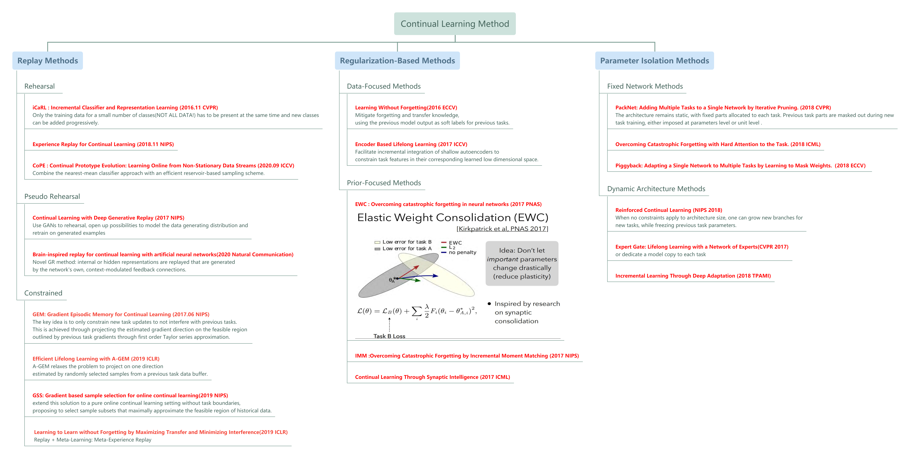
Mind Map
Some
representative Replay Methods(Keep updating):
Only brief introduction, read the origional paper for more
information. #### iCaRL (incremental classifier and representation
learning)
iCaRL belongs to Rehearsal and Class
incremental Learning.
iCaRL, that allows learning in such a classincremental way: only the
training data for a small number of classes(NOT ALL
DATA! new data + some old data) has to be present at the same time and
new classes can be added progressively.
The author introduces three main components that in combination allow
iCaRL to fulfill all criteria put forth above.
classification by a nearest-mean-of-exemplars rule
prioritized exemplar selection based on herding
representation learning using knowledge distillation and
prototype rehearsal.
Classification (nearest-mean-of-exemplars)
Algorithm 1 describes the mean-of-exemplars classifier that is used
to classify images into the set of classes observed so far.
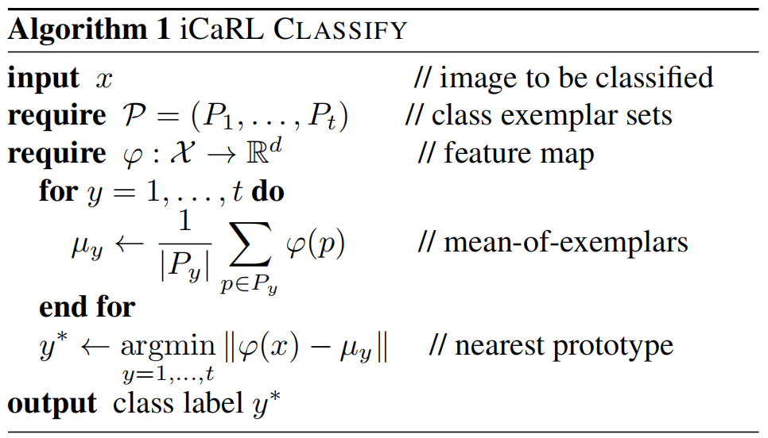
Split Mnist Task
where \(\mathcal{P} =
(P_1,\ldots,P_t)\) is exemplar images that it
selects dynamically out of the data stream.
And \(t\) denotes the number of
classes that have been observed so far(\(t\) increases with time).
\(\varphi:\mathcal{X}\rightarrow
\mathbb{R}^d\), a trainable feature extractor, followed by a
single classification layer with as many sigmoid output nodes as classes
observed so far.
Class label \(y\in
\{1,\ldots,t\}\).
Training
For training, iCaRL processes batches of classes at a time using an
incremental learning strategy. Every time data for new classes is
available iCaRL calls an update routine (Algorithm 2)
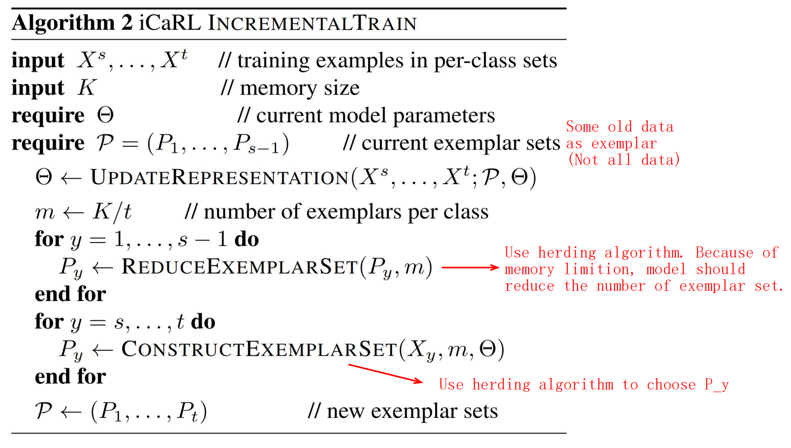
Split Mnist Task
Other algorithm (For more detail, you can visit
10.1109/CVPR.2017.587) 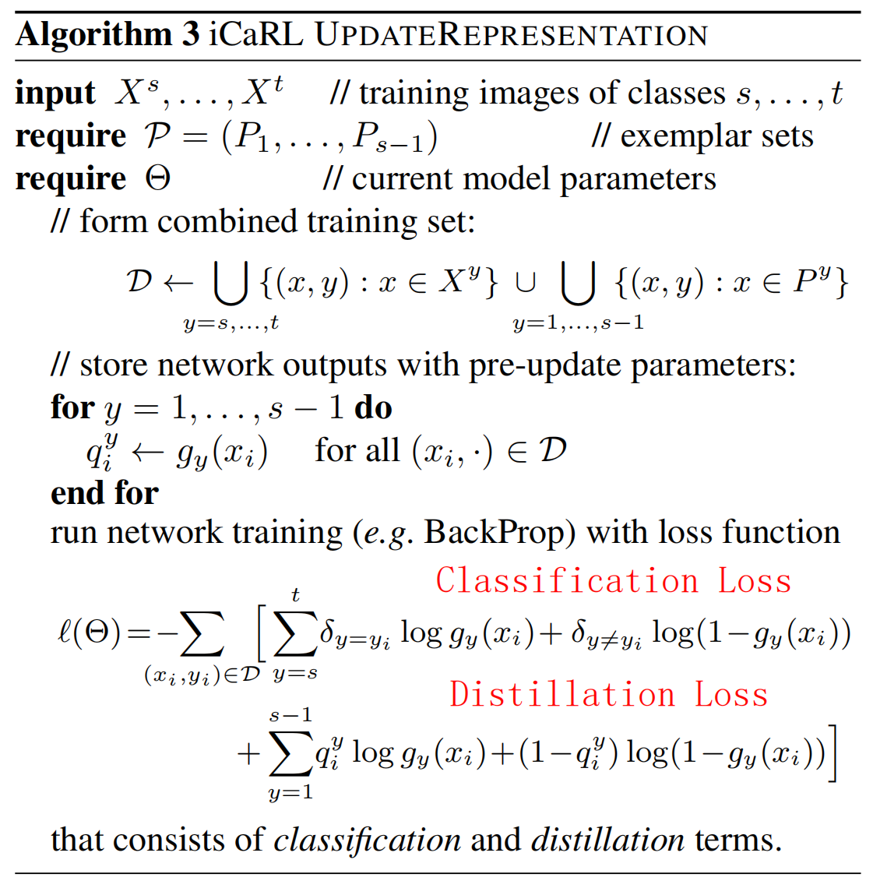
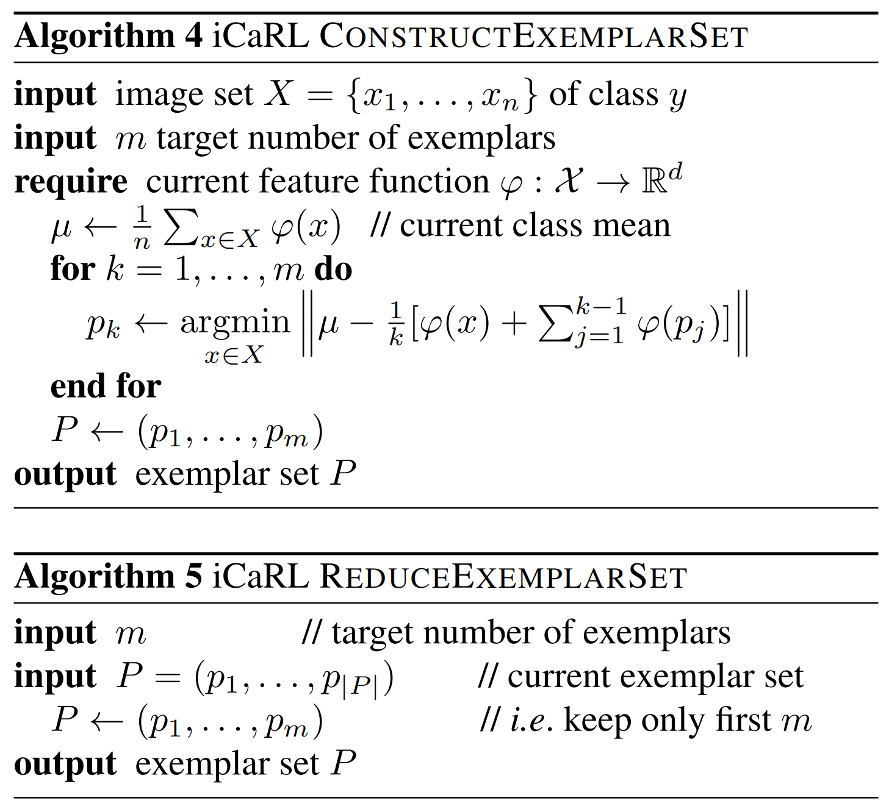
GEM:
Gradient Episodic Memory for Continual Learning8
Some important definition:
Note: Analogous to Transfer and
Interference. 1. Backward
transfer(BWT), which is the influence that learning a current
task \(t\) has on the performance on a
previous task \(k\) (\(k<t\)). - Positive Backward transfer:
There exists positive backward transfer when learning about some task t
increases the performance on some preceding task k. - Negative Backward
transfer: There also exists negative backward transfer when learning
about some task t decreases the performance on some preceding task k.
Large negative backward transfer is also known as catastrophic
forgetting. 2. Forward transfer(FWT), which is
the influence that learning a current task t has on the performance on a
future task k (\(k>t\)). (Rarely
discussed because it is unpredictable) - Positive Forward transfer: In
particular, positive forward transfer is possible when the model is able
to perform “zero-shot” learning, perhaps by exploiting the structure
available in the task descriptors.
Evaluation:
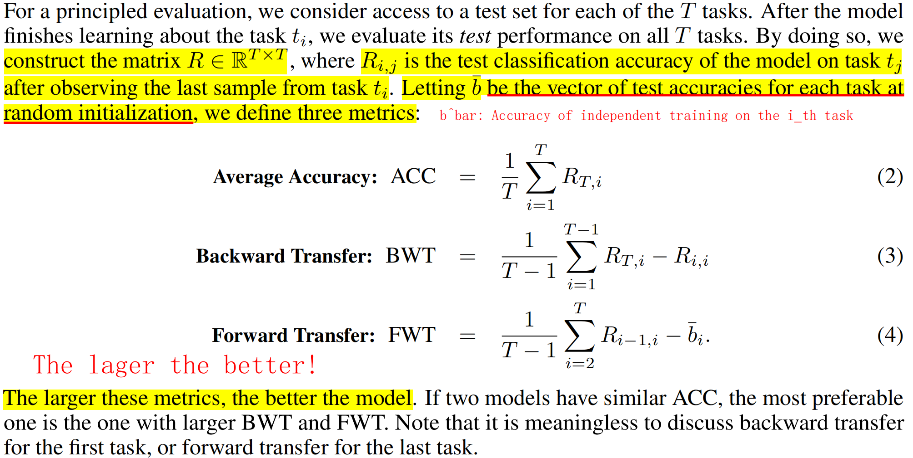
Evaluation
GEM:
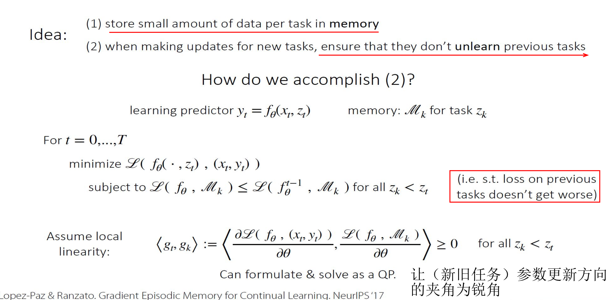
GEM
Experiments: 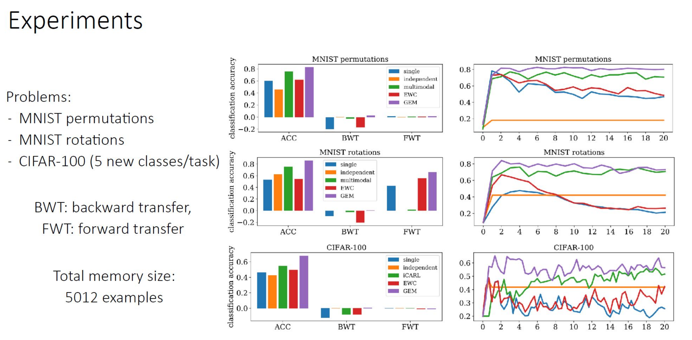
For More Blogs
TODO : The future of Continue Learning.
TODO : Details of some papers。
Reference &
Acknowledgements
Lopez-Paz, D. and M. t. A. Ranzato
(2017). Gradient Episodic Memory for Continual Learning. Advances in
Neural Information Processing Systems, Curran Associates, Inc.↩︎
Wang, Z., et al. (2022). Learning To
Prompt for Continual Learning. Proceedings of the IEEE/CVF Conference on
Computer Vision and Pattern Recognition (CVPR).↩︎
Rebuffi, S., et al. (2017). iCaRL:
Incremental Classifier and Representation Learning. 2017 IEEE Conference
on Computer Vision and Pattern Recognition (CVPR).↩︎
Gido van de Ven and Andreas S.
Tolias.(2019) Three scenarios for continual learning. arXiv:1904.07734↩︎
Lange, M. D., et al. (2022). "A
Continual Learning Survey: Defying Forgetting in Classification Tasks."
Ieee Transactions on Pattern Analysis and Machine Intelligence 44(7):
3366-3385.↩︎
https://icml.cc/virtual/2021/tutorial/10833 Part
of blog's pictures come from this link. Thanks :)↩︎
van de Ven, G. M., et al. (2020).
"Brain-inspired replay for continual learning with artificial neural
networks." Nature Communications 11(1): 4069.↩︎
Lopez-Paz, D. and M. t. A. Ranzato
(2017). Gradient Episodic Memory for Continual Learning. Advances in
Neural Information Processing Systems, Curran Associates, Inc.↩︎